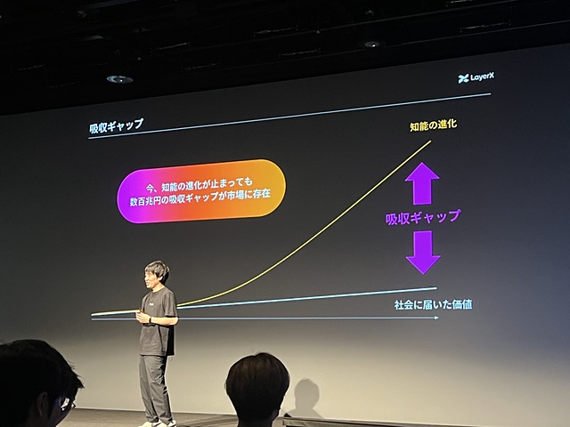
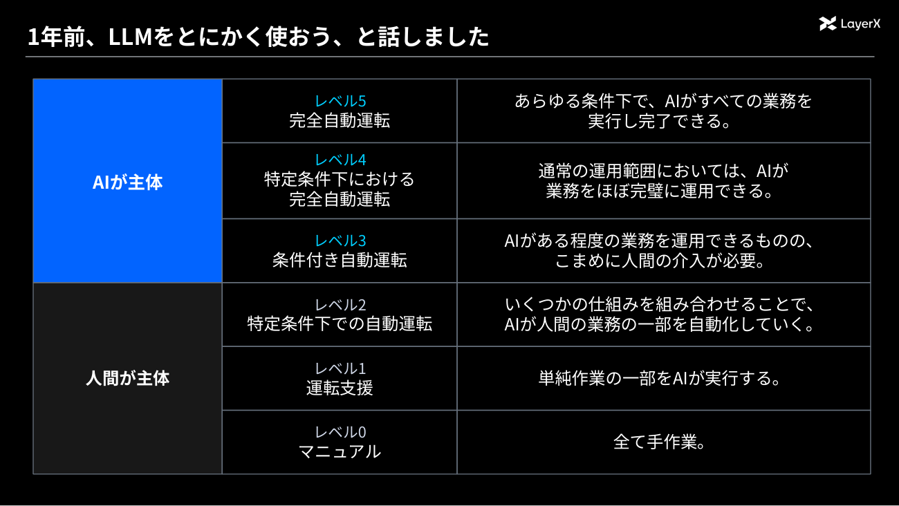
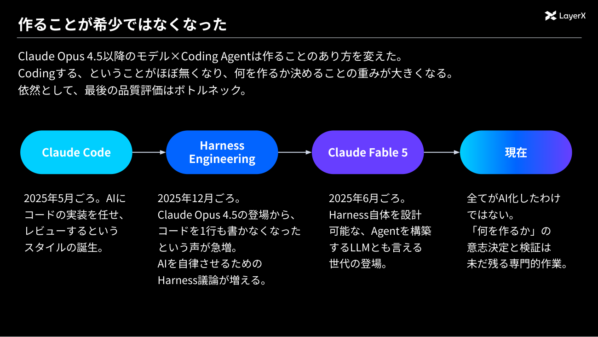
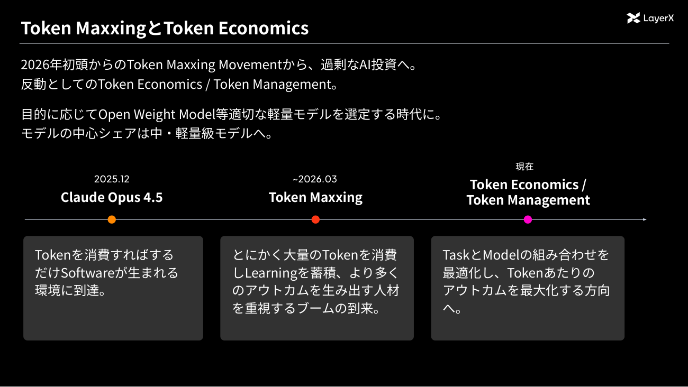
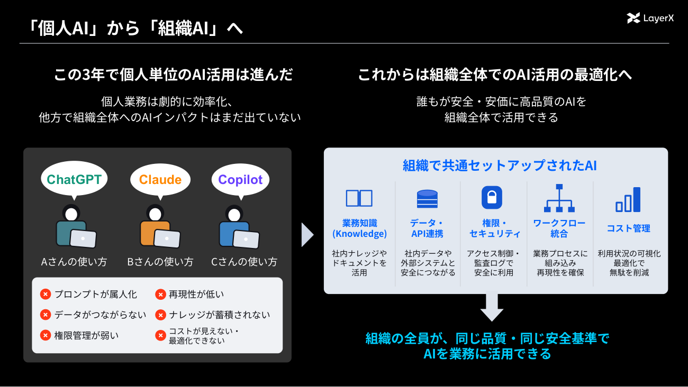
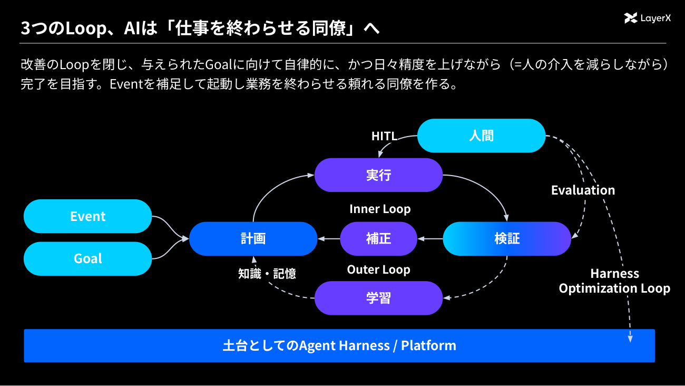
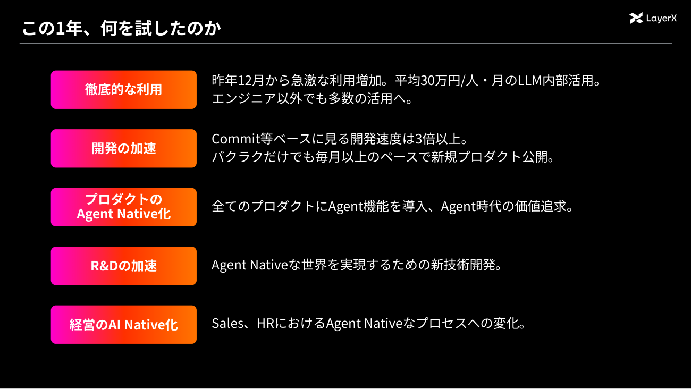
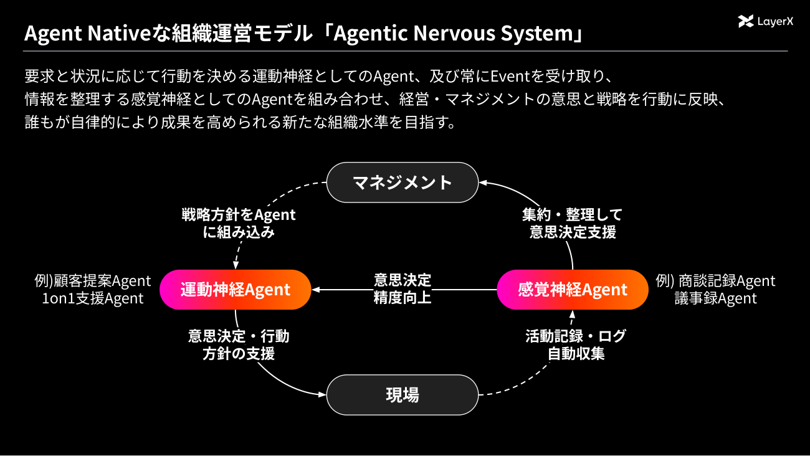
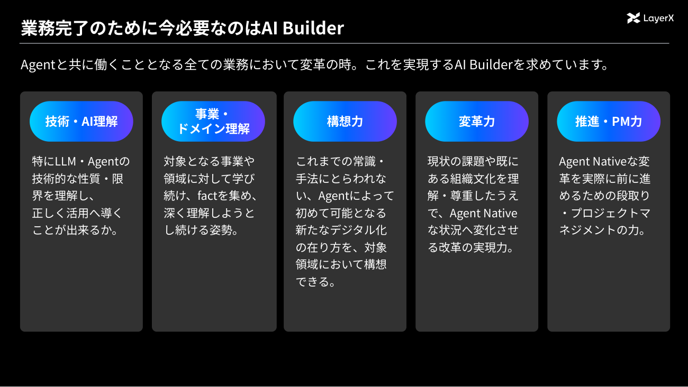

なぜ個人のAI活用は会社の成果につながらないのか？LayerX福島良典氏が説く「組織AI」の社会実装
ChatGPTやClaudeの浸透で、個人の生産性は確かに上がった。だが、売上やコストといった会社の経営数字は変わっただろうか。2026年9月3日に開催されたLayerX主催のカンファレンス「Bet AI Day 2026」では、体調不良で急遽登壇できなくなった代表取締役CTOの松本勇気氏に代わり、代表取締役CEOの福島良典氏がオープニングトークとキーノートを続けて務めた。この1年のAIの環境変化を振り返りながら、AIを「使う」組織から、AIが「働く」組織への道筋を語った。
8ヵ月でコストは20分の1。「最高の知能が格安で手に入る時代」に残る吸収ギャップ
「Bet AI Day」は、法人支出管理サービス「バクラク」などを手がけるLayerXが主催するAIカンファレンスだ。2回目となる今回のオープニングトークに立った福島氏は、冒頭でこの日のメインメッセージを「Bet AI “エージェント”」と掲げた。
「AIエージェントが、単なるツールを超えて自律し、一緒に仕事をする同僚のような存在になっていく。どんどん作り、使って、会社に溶け込ませてほしい」（福島氏）
福島氏は大学時代にAIを研究し、大学院在学中の2012年にGunosyを創業。記事推薦や広告配信のアルゴリズムを自ら開発しながら経営し、創業から約2年半で上場を果たした。2018年からはLayerXの代表取締役CEOを務めている。
第1回だった昨年、福島氏は「UserからBuilderへ」というテーマを掲げた。この1年を振り返り、「私が言うまでもなく、みんながビルダーになった。特にコーディングやデザインといった『作る側』にAIが入った1年だった」と語る。
変化を象徴するのが価格だ。2025年11月に登場したClaude Opus 4.5は、入力100万トークンあたり5ドル、出力25ドル。誰もが「信じられないほど賢い」と感じた知能である。それが2026年7月には、Opus 4.8超えのコーディング性能をうたうGPT-5.6 Lunaが入力0.2ドル、出力1.2ドルで登場。DeepSeek-V4-Flashに至っては入力0.14ドル、出力0.28ドルだ。わずか8ヵ月で、最高水準の知能のコストは20分の1から60分の1に下がったことになる。
一方で福島氏は、AIエージェントを「モデルにハーネス（AIを現実の業務につなぐ実行環境）が付いたもの」と整理したうえで、競争の主戦場の変化を指摘する。ナレッジをどう構築するか、ツールをどう整理するか、ガードレールやセッション管理をどう設計するか。どのモデルを選ぶかではなく、ハーネスをどう構築して現実の仕事に着地させるかに戦場は移っているという。
ここで福島氏が「今日覚えて帰ってほしい」と挙げたキーワードが「吸収ギャップ」である。モデルの知能は急速に進化しているのに、社会に届いた価値はそれに遠く及ばない。その差のことだ。

株式会社LayerX 代表取締役CEO 福島良典氏
「LLMを使えば帳票を読み取れることは、AIに触れている人ならほとんど知っています。でも、そんな単純なことですら、まだ世の中に普及しきっていないのです」（福島氏）
同社が提供するOCRのような「AIで仕事を補助する」プロダクトですら、世の中の普及率は良くて10％程度という感覚だという。数百兆円規模の労働市場の仕事をエージェントが担うようになるこれからの時代、この吸収ギャップをどう埋めるかが、人口が減っていく日本にとって決定的なテーマになると福島氏は強調した。
そのために必要なのが「ループを閉じる」ことだ。セキュリティや権限、組織のルールを越えてエージェントを企業の内側に届け、実際に仕事をさせ、評価を作り、改善のループを回す。従業員のように、仕事をすればするほど成長するエージェントを企業の中に作ることが重要になるという。
福島氏は「AIで新たに開かれた市場機会は、とても1社では埋めきれない。会社の枠を超えて日本のAIを盛り上げる仲間として、市場の王道・ど真ん中にチャレンジしていこう」と呼びかけ、オープニングを締めた。
本来はここで、CTOの松本勇気氏によるキーノートに移る予定だった。だが松本氏が体調不良により急遽欠席となり、キーノートも福島氏が続けて務めることになった。テーマは「AIを『使う』から、AIが『働く』へ。『組織AI』の社会実装」である。
業務の「自動運転」はレベル4へ。この1年に起きた四つの環境変化
キーノートは、1年前に松本氏が語った内容の答え合わせから始まった。昨年のメッセージは「LLMをとにかく使おう」というものだった。AI時代の競争優位はスピードだけだという「Speed is the new Moat」、まず試すこと、そして業務の完全自動運転の三つである。
このとき松本氏は、業務の自動化を車の自動運転になぞらえたレベル分類で説明し、「世の中はレベル2が普及し始めた段階だが、AIはすでにレベル3まで行ける」と予測していた。福島氏は「振り返ると、まあまあ当たっていた」と評価する。

そのうえで、この1年はさらに一段進むと見る。特定条件下では完全に自動運転する「レベル4」だ。例外処理や人間へのエスカレーションが必要かどうかの判断すらエージェントが行い、通常の業務範囲はAIがオートパイロットでほぼ完了させる。人間は残ったわずかな例外だけをチェックする世界である。
なぜそう考えるに至ったのか。福島氏はこの1年の環境変化を四つ挙げた。
- 自律実行性能の向上
- 「作ること」の価値低下
- Token MaxxingからToken Economicsへ
- Ambient Agent（環境常駐型エージェント）の台頭
一つ目の自律実行性能について、福島氏は根拠を四つ示した。数学やコーディングなどのベンチマークが完全に飽和し、長時間タスクの性能も伸び切りつつあること。Claude Mythosに代表されるように、サイバーセキュリティ能力などで「人間超え」の性能が現れたこと。Claude Fableの登場で、AIの作業をメタ的に改善するAI、つまりエージェントを作るエージェントが実用になり始めたこと。そして圧倒的な低価格化だ。福島氏は「来年の今頃には、今の最高品質のモデルがおそらく50分の1以下の価格で使えるようになる」と見通しを示した。
残る三つの変化は、いずれも「組織でAIをどう使うか」に直結するものだ。次章で順に見ていこう。
— 2ページ目 —
作ることが希少ではなくなり、Token MaxxingからToken Economicsへ
二つ目の変化は、作ることの価値低下である。福島氏自身、プロダクションコードこそ書かないものの、プロトタイプや自分用の業務エージェントをコーディングエージェントで作ることがあるといい、その進化を実感を込めて語った。
「Claude Codeがない時代にどうやって開発していたのか、私自身は想像できないくらい忘れてしまっています。すごい時代になったと思います」（福島氏）
スライドでは、この2年弱のパラダイムの変遷が整理された。2025年5月頃、Claude Codeの盛り上がりとともに、AIに実装を任せて人間がレビューするスタイルが生まれた。続いて、コーディングエージェントにどんな環境やコンテキストを渡すかを設計する「ハーネスエンジニアリング」が主題になり、Claude Fable 5の登場で、ハーネス自体をAIが設計・自己改善するところまでパラダイムが広がった。

コードを書くこと自体はAIができるようになった。それでも「何を作るか」の意思決定と、できたものの検証には人間の専門性が残る。価値は、作る作業から、決めることと確かめることへ移ったのである。
三つ目の変化が、Token MaxxingからToken Economicsへの転換だ。Token Maxxingとは、とにかく大量のトークンを消費して仕事をAIに任せる人材を良しとするブームのこと。LayerXも昨年のBet AI Day以降、社内でLLMを徹底的に使い込んだ。その結果は劇的だった一方、代償も大きかったという。
「具体的な数字は言えませんが、会社のコストに影響を与えるレベルでトークンコストを使ってしまいました。継続すれば、赤字が嵩み事業継続が困難な水準になっていたでしょう」（福島氏）
そこで同社は、タスクとモデルの組み合わせを最適化するAIゲートウェイやモデルルーティングを社内に実装。デフォルトで選ばれるモデルや推論量の調整、プロンプトキャッシュを意識したセッションの作り方といった基礎教育まで含めて、トークンあたりのアウトカムを最大化する「Token Economics／Token Management」へ移行した。

興味深いのは、管理を強めてもトークンの使用量自体はToken Maxxing期より増えていることだ。使用量は増え、コストはコントロールできている。これが最適化の成果である。
もっとも福島氏は、Token Maxxingを失敗だったとする世間の議論には異を唱える。AI導入の本質は技術の問題であると同時に、組織のOSやカルチャーを入れ替えるチェンジマネジメントの問題であり、Token Maxxingはカルチャー変革を突破するために極めて有用だったというのが同社の総括だ。「とにかく作ってみる、全社で使い倒す、そしてコントロールする。この山を経ないと、AI活用はなかなか進まない」と述べ、多くの企業がこれから同じ山を登ることになるとの見方を示した。
四つ目の変化がAmbient Agentである。チャットで指示して起動するのではなく、メールの受信や書類の到着、時間などのイベントを起点に、環境に溶け込んで自律的に動くエージェントのことだ。チャットでの活用は個人に閉じやすいのに対し、イベントトリガーで確実に動くエージェントは組織にスケールさせやすい。「個人のAI活用から、組織にエージェントを取り込む流れが、この1年で増えていく」と福島氏は予測した。
個人AIから組織AIへ。「三つのループ」が学習する同僚エージェントを生む
こうした変化を踏まえ、キーノートの核心である「組織AI」の話に入る。この3年、ChatGPTやClaude、Copilotといったツールで個人単位のAI活用は劇的に進んだ。Excel作業もカレンダー調整もメールの振り分けも速くなり、個人の生産性は間違いなく上がっている。
だが、と福島氏は問う。メール処理や資料作成が速くなって、売上は上がったのか。コストは下がったのか。経営に直結する成果との間には、まだ大きなギャップがある。
個人での活用には構造的な限界もある。ナレッジやデータが個人に閉じ、プロンプトが属人化する。API連携を各自が作ればオーバーヘッドになり、セキュリティ基準もばらつく。だからこそ、業務知識、データ・API連携、権限・セキュリティ、ワークフロー統合、コスト管理を組織で共通化し、全員が同じ品質・同じ安全基準でAIを業務に使える状態を作ることが、この1年のテーマになるという。

では、組織のAIをどう育てるのか。松本氏はかつて、社員のオンボーディングのようにAIを扱う「AIオンボーディング」を提唱した。今はさらに一歩進み、AIを自己進化させる段階にあると福島氏は言う。
「熟練のエンジニアは仕事から、プロジェクトから、インシデントから学びます。でも、今のAIは覚えません。モデルの重みを変えない限り学習されない。それでも、ハーネスをうまく改善していくことで、学習する社員のようなエージェントを作れるのです」（福島氏）
その仕組みが「三つのループ」だ。イベントやゴール志向の指示を起点に、エージェントが計画・実行し、検証・補正を受けるInner Loop。検証から学習し、知識・記憶として次の計画に生かすOuter Loop。そして、失敗の原因を分析してシステムプロンプトやツール権限、ワークフローといったハーネス自体を修正するHarness Optimization Loopである。実行には人間もHITL（ヒューマンインザループ）として関与する。

重要なのは検証の設計だ。何が良いデザインか、この会社では会計をどう締めるか。そうした判断基準は極めて閉じた知識であり、汎用モデルは知り得ない。だから評価を用意し、そこからハーネスが学習して修正される構造を作る。予算業務でスプレッドシートの重要データにアクセスできず失敗したなら、権限設定そのものを直す、といった具合だ。
「エージェントは使えば使うほど賢くなり、あなたの会社、あなたの業務にフィットしていく。こういう世界を、これまでは人間が作るしかありませんでした。最近LayerXの中でチャレンジしているのが、その改善役をフロンティアモデルに任せることです。やらせてみると、かなりうまくいくことが分かりました」（福島氏）
完全に任せきれるほど整ってはおらず、人間の介入はまだ必要だとしつつも、方向性とハーネスの土台ができた後は、仕事のログと正しい評価をAIに渡して改善案を考えさせ、自己改善させることがかなりできるようになってきたという。
— 3ページ目 —
1人あたり月約30万円のLLM活用と開発速度3倍。LayerXの「経営のAIネイティブ化」
では、LayerX自身はこの1年、何を試したのか。福島氏は五つの取り組みを紹介した。

一つ目は徹底的な利用だ。昨年12月頃から社内ツールやMCP群をエンジニア以外にも配り、全社でAIを使い倒した。その規模は平均で1人あたり月約30万円のLLM利用。同社の平均給与は約800万円といい、「給与の3〜4割をトークンコストに使う、人件費が実質1.4倍になる世界。経営者なら恐ろしさが分かると思います」と福島氏は振り返る。
二つ目が開発の加速である。参考指標としつつも、コミット数ベースの開発速度は3倍以上になった。5年目を迎えた「バクラク」事業では、過去4年間で出したのと同じ数の新プロダクトを、この1年で出した感覚だという。三つ目として、すべてのプロダクトへのエージェント機能導入（Agent Native化）にも取り組んだ。
四つ目がR&Dだ。エージェントを自己改善するエージェントが、すでに社内で実戦投入されているという。そして五つ目が経営のAIネイティブ化である。3年ほど前から顧客の許可を得て録画してきた商談動画をAIが分析し、営業ごとの苦手に合わせたロールプレイングを提案する仕組みや、半期評価でマネージャーを支援するHRプロセスを整備。足元では「半期の予算の洗い替えも、全部エージェントが作っています」と明かした。
利用の爆発を支えたのが、全従業員に配布した社内エージェントプラットフォーム「Shepherd」だ。デスクトップアプリとしてコーディングエージェントが走り、MCP接続、ガードレール、スケジューラー、モデルルーティング、コスト管理を備える。当時500人を超える全社員が制約なく使った経験から、前述のLLMゲートウェイや、プロンプトキャッシュの効き方まで個人にフィードバックするコスト解析ツールが生まれ、頻出タスクは営業ポータルや人事ツールへ統合されていった。
開発が速くなった結果、ボトルネックは実装から、仕様と検証へ移動した。何を作るか、そして安全に正しく動くものができたと誰が保証するのか。同社は今年グループ入りしたAgenticSecによるペネトレーションテスト（エージェントが実際に攻撃者として振る舞い、本当に突破できる脆弱性から優先度を付ける検証）や、グループの三井物産デジタル・アセットマネジメントにおけるコンプライアンスを守りながら動くエージェント、AIと人間の最適な実行体制を組むAI-BPO、顧客のデジタル化に伴走するFDE（フォワードデプロイドエンジニア）まで、あらゆる手段でボトルネックの解消を続けているという。
組織運営そのものも変わり始めている。同社が「Agentic Nervous System」と呼ぶ、エージェントを神経系のように組織に巡らせるモデルだ。商談記録や議事録を常時収集・整理する感覚神経のエージェントと、顧客提案や1on1を支援する運動神経のエージェントを組み合わせ、経営の意思と戦略を現場の行動に反映していく。

福島氏自身、営業のマネジメントが大きく変わったという。かつては各マネージャーに状況を聞いて回っていたが、今は商談記録もCRMもエージェントが読んでいる。
「私はエージェントに聞くだけです。ベースラインを設定して、異常値だけを検知するマネジメントの仕組みにしています」（福島氏）
エージェントが情報を集約して意思決定を支援し、マネジメントは方向性を決めてエージェントに組み込む。現場はエージェントの評価を通じてその方向にアラインしていく。情報の密度も行動の密度も速さも上がる、「マネジメント密度」の向上である。
「業務の完全自動化」をゴールに、変革を担うAI Builderになろう
最後に福島氏は、toBサービスのゴールを「業務の完全自動化、オートパイロット化」だと言い切った。AI時代には誰でも機能が作れるからプロダクトの差別化はなくなる、という近年の議論には真っ向から反論する。
「そう言われると、私はカチンとくるタイプでして。そんなことがあるか、と。過去最高に差別化される時代が、今来ていると思います」（福島氏）
ポイントはエンドツーエンドの自動化、業務が完全に溶け込んで見えなくなる状態だ。福島氏が「ゼロタッチオートメーション」と呼ぶ理想を、経費精算を例にこう描く。
「カード決済をした瞬間に、経費精算は終わっています。マネージャーは承認していないし、あなたは稟議も書いていません。裏側では、決済していいか、価格は最適かを、全部エージェントが判断しています。この状態って最高じゃないですか」（福島氏）
この業務完了の世界を作るために今必要な人材が「AI Builder」だ。福島氏は五つの要件を挙げた。LLMやエージェント特有の技術的性質を理解する技術・AI理解。対象業務を深く知る事業・ドメイン理解。1年後にエージェントが10倍賢くなった世界から逆算する構想力。そして変革力と、推進・PM力である。

中でも変革力について、福島氏は経費精算の自動承認を例に補足した。「いいね」と言う人と、「うーん」と渋る人が必ずいる。渋る側は間違っていない。監査や内部統制の観点では、人間のチェックが業務の基準になっているからだ。エージェントの判断が何を根拠に、どう判断し、どう監査できるのか。それを説明できなければ、技術的に可能でも会社の業務には乗らない。AI活用の最後の壁は、技術ではなくチェンジマネジメントにあるのだ。
締めくくりに福島氏は、キーノートのメインメッセージを改めて整理した。個人のAI活用は素晴らしいし、第一歩として不可欠だ。だが、それは組織の生産性向上と必ずしもイコールではない。組織AIに必要な技術アーキテクチャーや組織のOSは、既存の組織とは決定的に異なる。だからこそ、作るだけでなく、業務を理解し、既存のルールで動く人の気持ちとロジックを理解したうえで、変革まで踏み込む人が要る。
「エンジニアにとどまるのではなく、ルールを変える、説得する、業務を理解する。そこまで踏み込んで、AIとともに働く社会を一緒に作っていきましょう」と語り、業務を終わらせる組織AIを生み出そうという呼びかけで、福島氏はキーノートを締めくくった。